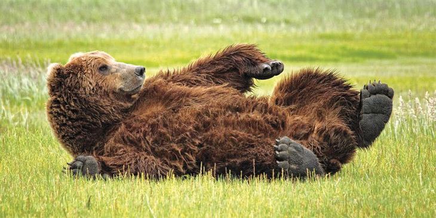
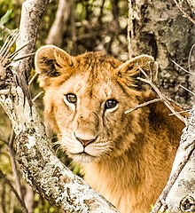

Wild animals♥
Wildlife refers to undomesticated animal species, but has come to include all organisms that grow or live wild in an area without being introduced by humans. Wildlife was also synonymous to game: those birds and mammals that were hunted for sport. Wildlife can be found in all ecosystems. Deserts, plains, grasslands, woodlands, forests, and other areas, including the most developed urban areas, all have distinct forms of wildlife.
While the term in popular culture usually refers to animals that are untouched by human factors, most scientists agree that much wildlife is affected by human activities. Some wildlife threaten human safety, health, property, and quality of life. However, many wild animals, even the dangerous ones, have value to human beings. This value might be economic, educational, or emotional in nature.
- Wild animals are, for example
- Tigers
- Elephants
- Bears
Tigers and bears eat meat, and elephants are herbivores.

Global wildlife populations have decreased by 68% since 1970 as a result of human activity, particularly overconsumption, population growth, and intensive farming, according to a 2020 World Wildlife Fund's Living Planet Report and the Zoological Society of London's Living Planet Index measure, which is further evidence that humans have unleashed a sixth mass extinction event.According to CITES, it has been estimated that annually the international wildlife trade amounts to billions of dollarsS and it affects hundreds of millions of animal and plant specimen.